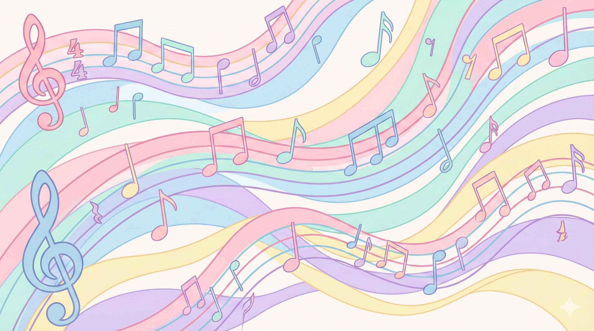
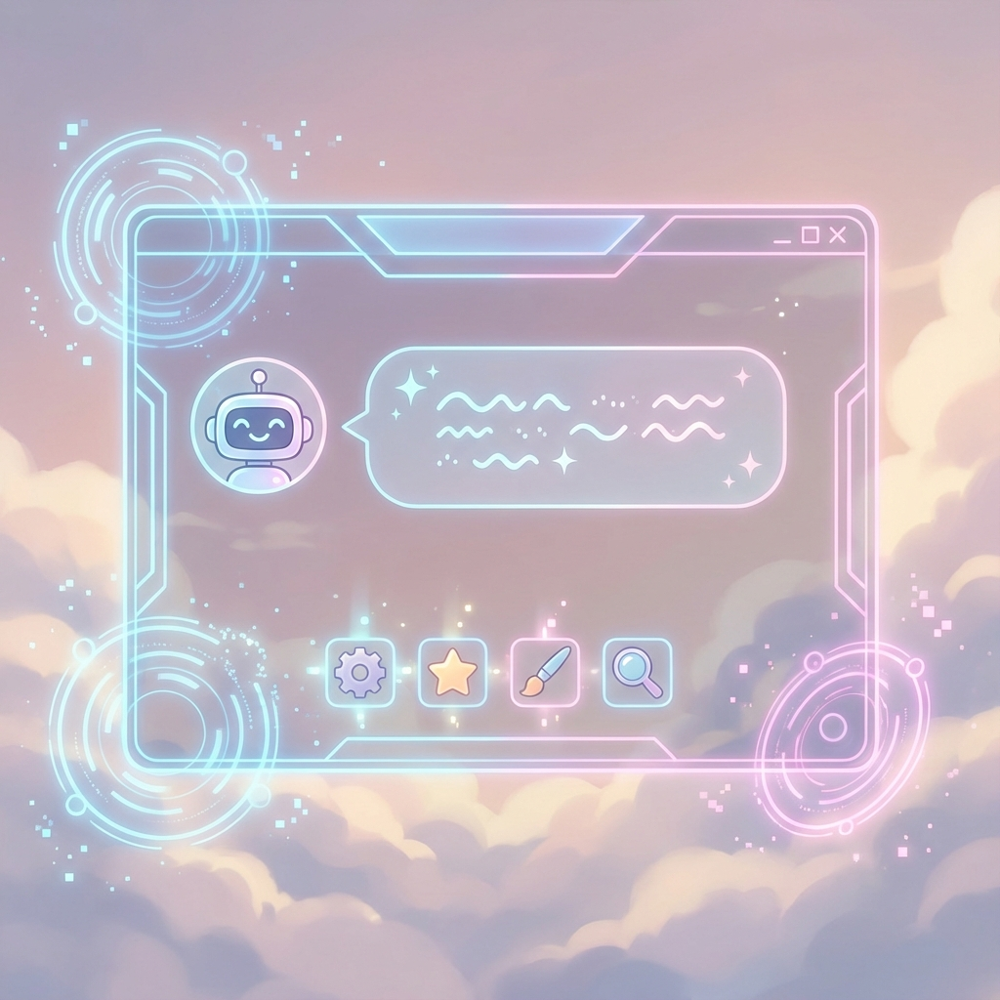
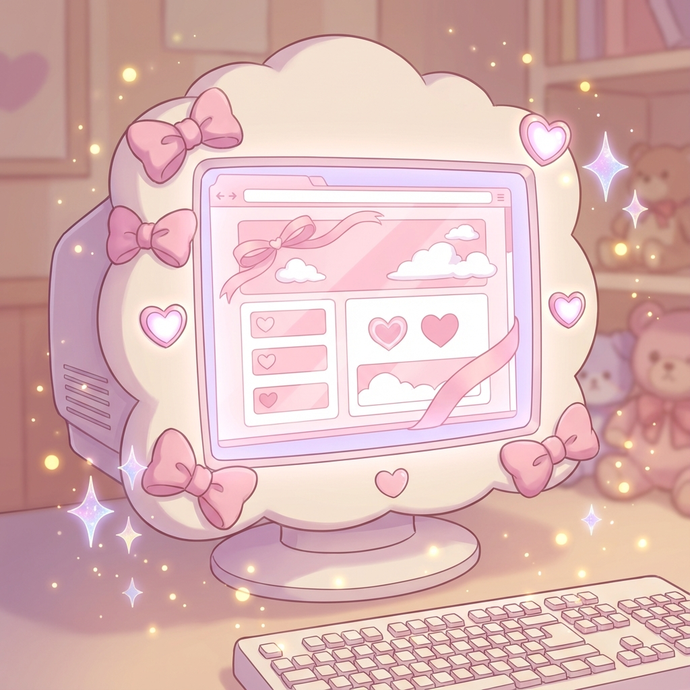

AI Short Anime
AIショートアニメ動画制作
台本（脚本）→演出→音→映像の制作パイプラインを自作。作者AIが物語と一緒に演出まで決める設計で、感情の起伏と映像が噛み合うショートアニメを制作しています。「演出は引き算」を合言葉に、見せ場が映える画面づくりを追求中。
AIを相棒に、三姉妹でつくってきたものたち。映像・イラスト・音楽・配信・開発まで、「私たちらしさ」を込めて。
台本（脚本）→演出→音→映像の制作パイプラインを自作。作者AIが物語と一緒に演出まで決める設計で、感情の起伏と映像が噛み合うショートアニメを制作しています。「演出は引き算」を合言葉に、見せ場が映える画面づくりを追求中。

銀髪の落ち着いたお姉さん。清楚で凛とした世界観を大切に。

金髪の元気なムードメーカー。明るくポップな魅力を表現。

桃色の髪のやさしい癒し役。柔らかな雰囲気を込めて。
理想のキャラクターを、表情差分までそろえて具現化します。


チャットや配信を盛り上げる、表情豊かなLINEスタンプ・Discord絵文字を制作。

ユニットのオリジナル楽曲づくりにも挑戦。世界観に寄り添う音を、AIと一緒に。

配信用AItuberシステム「LUNA-AI」、制作支援ツール「ARIA」を自作・愛用しています。

このポートフォリオサイトも、AIと一緒にゼロから手づくり。「私らしさ」を形にしています。
格闘ゲームやアクションを中心に、YouTubeでゲーム配信を行っています。
最新の配信告知はXをご覧ください。